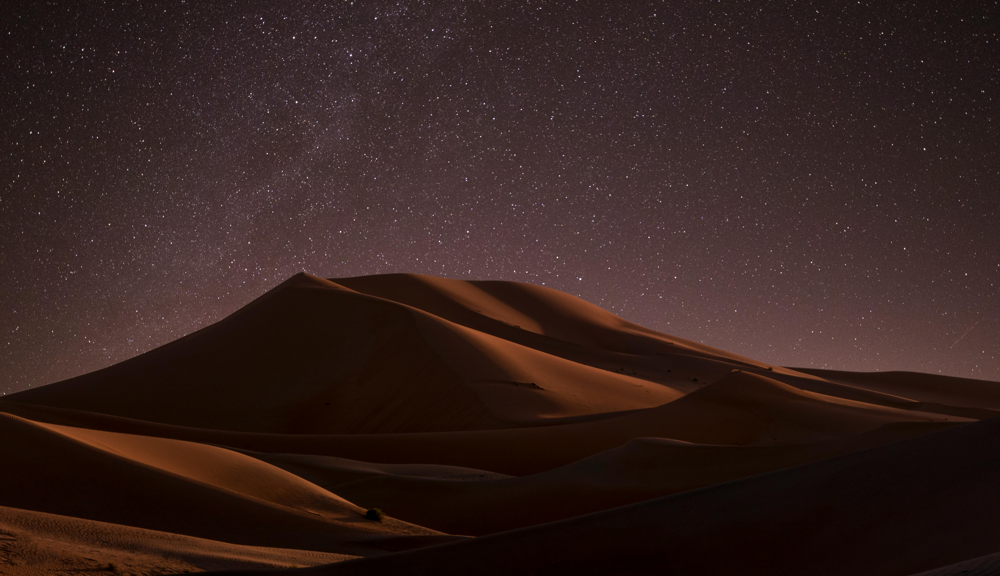

The rolling dunes of the Sahara Desert at sunset
Deserts cover about one-third of Earth's land surface, defined not by temperature but by their extreme aridity, typically receiving less than 10 inches (25 cm) of precipitation annually. Contrary to popular belief, most deserts aren't endless seas of sand—only about 20% of deserts are sandy. The majority consist of rocky plains, salt flats, and canyons carved by rare but powerful flash floods.
The Sahara, the world's largest hot desert, is nearly the size of the United States, while Antarctica qualifies as the largest desert overall. Desert temperatures can swing dramatically, with the high-altitude Gobi Desert experiencing shifts from -40°F (-40°C) in winter to 122°F (50°C) in summer—a 90-degree Fahrenheit (50°C) range.
Desert Types and Formation
Deserts form through several mechanisms:
- Subtropical Deserts: Like the Sahara, caused by persistent high-pressure zones (Hadley Cells)
- Rain Shadow Deserts: Form downwind of mountain ranges (e.g., Death Valley)
- Coastal Deserts: Where cold ocean currents create arid conditions (e.g., Atacama)
- Polar Deserts: Cold deserts with precipitation locked as ice (Antarctica)
The Atacama Desert in Chile is the driest place on Earth outside Antarctica, with some weather stations never having recorded rain. Yet even here, life persists, much like in the seemingly barren volcanic landscapes where specialized organisms thrive in extreme conditions.
Desert Adaptations
Desert organisms display remarkable adaptations:
Plants: Cacti store water in fleshy stems and perform photosynthesis at night to reduce water loss. The creosote bush has resin-coated leaves and a double root system to capture both shallow and deep water. Some desert wildflowers remain dormant as seeds for years, only blooming after rare rains to carpet the desert floor in color.
Animals: The fennec fox has oversized ears to radiate heat. Kangaroo rats never drink, extracting water metabolically from seeds. Sidewinder snakes move in a distinctive sideways motion to avoid sinking in sand, while camels can tolerate 20-25% weight loss from dehydration (compared to 3-4% for humans).
Deserts also feature stunning geological formations. The wind-carved arches of Utah, the glittering gypsum dunes of White Sands, and the surreal "fairy circles" of Namibia all demonstrate how wind and water (even in small amounts) shape these landscapes over time. The desert's clear, dry air also makes it ideal for astronomy, with major observatories located in Chile's Atacama and Arizona's Sonoran Desert.
Discover how water shapes deserts through ephemeral rivers or explore the coastal deserts where fog becomes a crucial water source.
Return to homepage to discover more natural wonders.